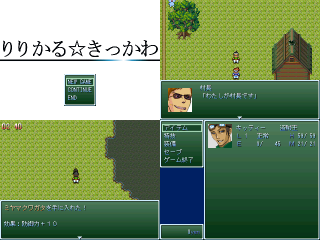

| No,083 【りりかる☆きっかわ】 |
| ダウンロード(1.96MB) 修正ファイル（27.7KB） 2007/1/3 12:50 |
 |
| 【ＨＮ】 バンゲリング橘 【コメント】 12/24 1:00 寂しく一人で呑む 2:00 紅白ＶＩＰＲＰＧのことを知る 4:00 自分も作ろうと思いつつ食器を洗う 5:00 tktkしはじめる 6:00 眠くなったので寝る 16:00 寝すぎて焦る 22:00 デバッグ作業 23:00 覚悟完了 製作時間：約８時間 衝撃のエンディングに期待すべし！ |
| 【管理人コメント】 飛び入りで参加する猛者が登場！ ８時間でどこまでツクったのか実に見物である |